Ege Bölgesi
Türkiye zeytinyağı üretiminin ana merkezi olan Ege Bölgesi, Ayvalık ve Memecik gibi çeşitlerle güçlü bir profil sunar.
Ege Bölgesi odaklı zeytinyağı markaları, benzer bölgeler ve ilgili zeytin çeşitleri. 66 marka listesi.
Bu Sayfadaki Markalar
 Premium / Butik
Öne Çıkan
Premium / Butik
Öne Çıkan
Adatepe
Kazdağları eteklerinde üretim yapan köklü marka. Taş baskı ve natürel sızma zeytinyağı çeşitleriyle bilinir....
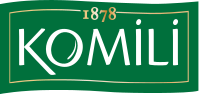
Market Öne ÇıkanKomili
1878'den bu yana Türkiye'nin en köklü zeytinyağı markalarından biri. Ayvalık merkezli, geniş ürün yelpazesi ile hem soğuk sıkım natürel sızma hem de riviera çeşitleri sunar....
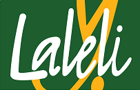
Premium / Butik Öne ÇıkanLaleli
Ödüllü Türk zeytinyağı markası. Uluslararası yarışmalarda çok sayıda altın madalya kazanmıştır. Erken hasat natürel sızma zeytinyağları ile bilinir....
 Premium / Butik
Öne Çıkan
Premium / Butik
Öne Çıkan
Nermin Hanım Zeytinliği
Ayvalık merkezli butik üretici. Erken hasat ve izlenebilir üretim yaklaşımıyla natürel sızma ürünler sunar....
NovaVera
Kuzey Ege merkezli butik üretici. Erken hasat, soğuk sıkım ve yüksek polifenol odaklı natürel sızma zeytinyağlarıyla bilinir....
 Premium / Butik
Öne Çıkan
Premium / Butik
Öne Çıkan
Oleamea
Premium segment Türk zeytinyağı markası. Uluslararası yarışmalarda ödüller kazanmıştır. Erken hasat, yüksek polifenollü natürel sızma zeytinyağları sunar....
Tariş
Ege Bölgesi zeytinyağı kooperatiflerinin birliği. Üreticiden doğrudan temin edilen zeytinlerle üretim yapar. Türkiye'nin en büyük zeytinyağı ihracatçılarından biridir....
Anolive
Ayvalık bölgesinde premium natürel sızma zeytinyağı üretimi yapan marka....
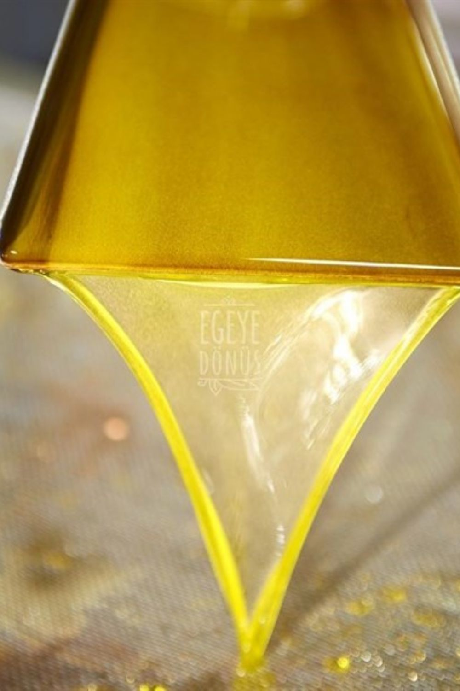
Bölgesel / YerelAyla Zeytinyağı
Ayvalık bölgesinin geleneksel zeytinyağı markası. Ayvalık çeşidi zeytinlerden soğuk sıkım natürel sızma zeytinyağı üretir....
Ayolis
Ayvalık bölgesinden premium natürel sızma zeytinyağı üreten marka....
Ayvaco
Ayvacık çevresinde üretim yapan yerel marka. Soğuk sıkım natürel sızma zeytinyağı çeşitleriyle bilinir....
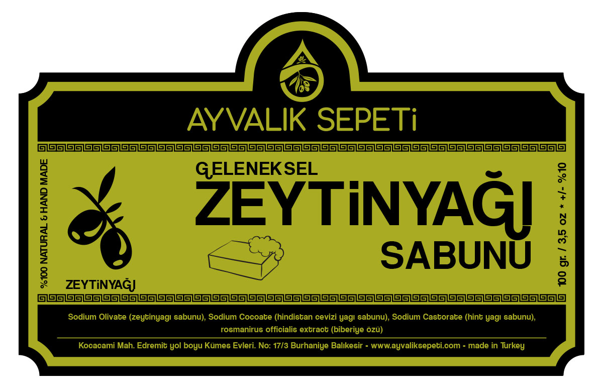
Bölgesel / YerelAyvalık Yıldızı
Ayvalık'ın meşhur zeytinlerinden üretilen bölgesel marka. Ayvalık zeytinyağının kendine has meyvemsi aromasını yansıtır....
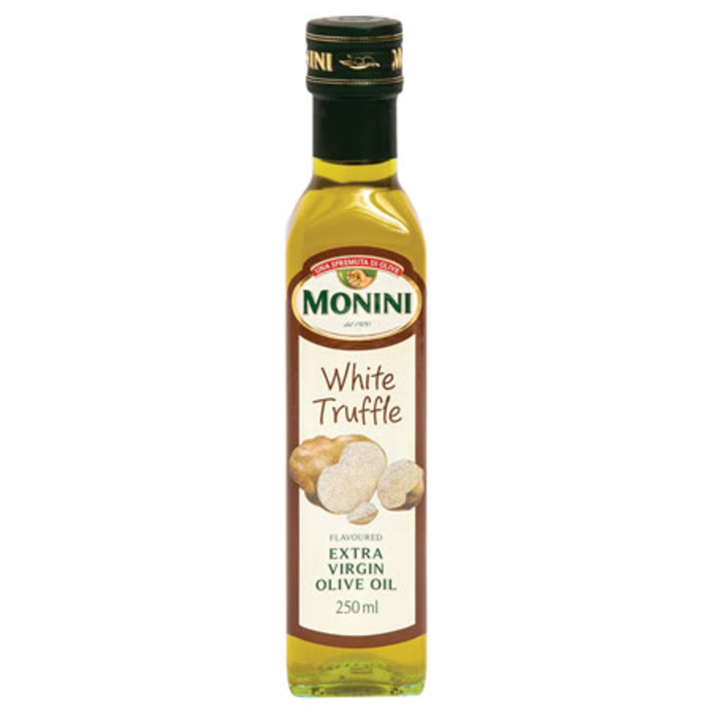
Premium / ButikBeyaz Altın
Premium Türk zeytinyağı markası. Erken hasat zeytinlerden üretilen natürel sızma zeytinyağları ile dikkat çeker....
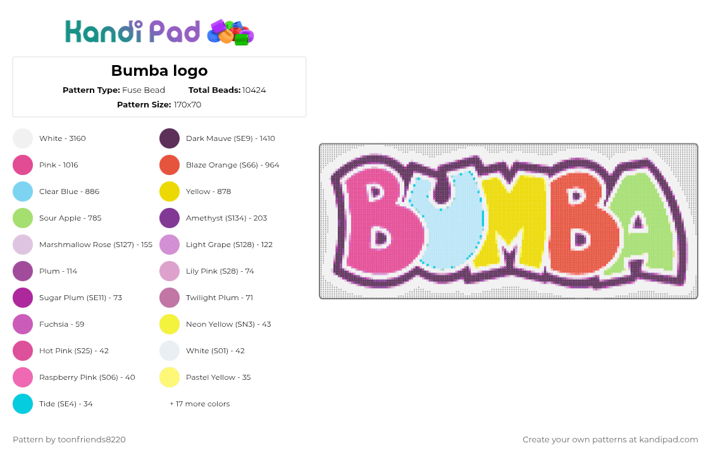
OrganikBumba Zeytinyağı
Organik sertifikalı zeytinyağı üreten marka. Kimyasal gübre ve ilaç kullanılmadan yetiştirilen zeytinlerden üretim yapar....
Buta Assos
Assos bölgesinde üretilen zeytinlerden premium natürel sızma zeytinyağı sunan marka....
Coşkun Zeytinyağları
Köklü Türk zeytinyağı üreticisi. Uzun yıllar boyunca Ege zeytinlerinden kaliteli zeytinyağı üretmektedir....
 Bölgesel / Yerel
Bölgesel / Yerel
Dalgıçoğlu
Edremit Körfezi çevresinde üretim yapan marka. Bölgesel zeytinyağı ürünleri sunar....
Değirmenci
Ege bölgesinden taş baskı ve soğuk sıkım zeytinyağları sunan marka. Geleneksel üretim yöntemleri ile kaliteli natürel sızma zeytinyağı üretir....
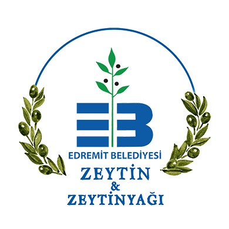
Bölgesel / YerelEdremit Körfezi
Edremit Körfezi'nin eşsiz ikliminde yetişen zeytinlerden üretilen natürel sızma zeytinyağı. ZETAŞ olarak da bilinir....
Egemden
Ege bölgesinin doğal lezzetlerini sunan marka. Natürel sızma zeytinyağı ve zeytin ürünleri portföyü bulunur....
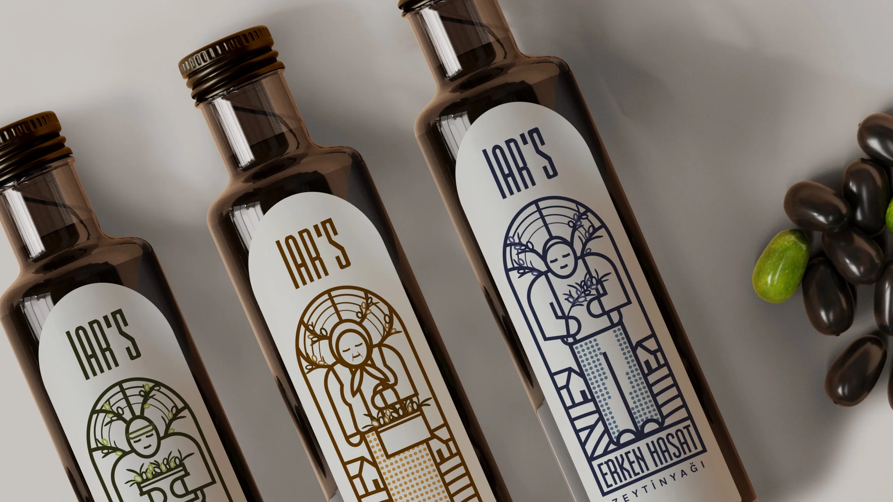
OrganikEkooleo
Organik sertifikalı natürel sızma zeytinyağı üreten marka. Ekolojik tarım ilkelerine bağlı üretim yapar....
Gaia Oliva
Ayvalık hattında üretim yapan marka. Natürel sızma ve özel seri zeytinyağı ürünleri sunar....
Hasat
Ege bölgesinden erken hasat zeytinyağı üreten marka. Erken hasat (early harvest) konseptiyle premium natürel sızma zeytinyağı sunar....
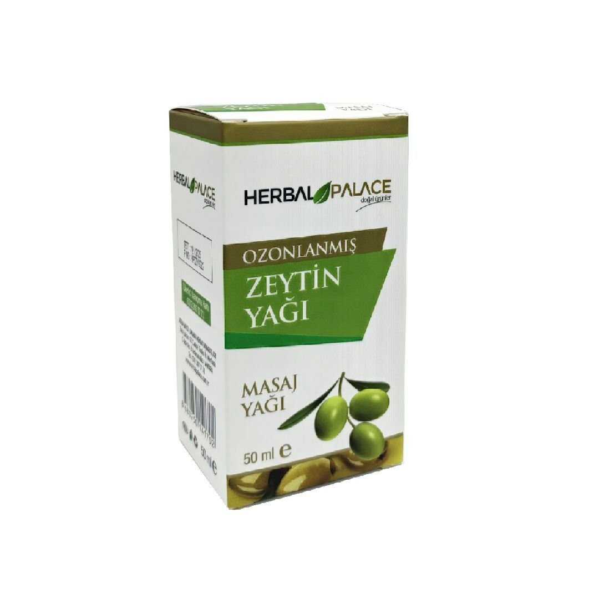
OrganikHerbal Organik
Organik sertifikalı zeytinyağı ve doğal gıda ürünleri sunan marka. Organik tarım standartlarına uygun üretim yapar....
Hermus
Akhisar ve çevresindeki zeytinlerden üretilen premium natürel sızma zeytinyağı markası....
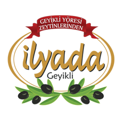
Premium / Butikİlyada
Çanakkale Geyikli'den kaliteli Türk zeytinyağı markası. Natürel sızma zeytinyağı ve sofralık zeytin çeşitleri sunar....
İzmir Birlik
İzmir bölgesi tarım kooperatifleri birliği (İZBİRLİK). Zeytinyağı dahil çeşitli tarım ürünlerinin işlenmesi ve pazarlanmasında faaliyet gösterir....
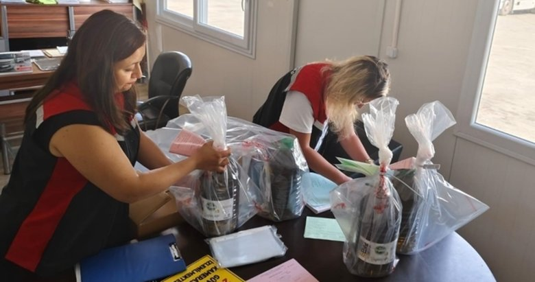
Bölgesel / Yerelİzmir Pınarı
İzmir bölgesinden kaliteli zeytinyağı üreten yerel marka. Ege zeytinlerinden soğuk sıkım natürel sızma zeytinyağı sunar....
Kahraman
Akhisar merkezli üretici. Natürel sızma, riviera ve farklı paket boylarında zeytinyağı ürünleri bulunur....
 Market
Market
Kırlangıç
Uzun yıllardır Türk mutfağının vazgeçilmez zeytinyağı markalarından. Natürel sızma ve riviera çeşitleri bulunur....
Koral Zeytin
Akhisar merkezli üretici. Zeytin ve zeytinyağı ürünlerinde yerel üretim odaklıdır....
 Market
Market
Kristal
Türkiye'nin en bilinen yemeklik yağ markalarından biri. Zeytinyağı dahil geniş yağ ürün gamı sunar. Market segmentinde güçlü konumu vardır....
 Market
Market
Luna
Türkiye'de yaygın olarak tüketilen zeytinyağı ve yemeklik yağ markası. Uygun fiyatlı riviera ve natürel sızma zeytinyağı seçenekleri sunar....
 Market
Market
Madra
Kuzey Ege bölgesinin kaliteli zeytinyağı markası. Edremit ve Ayvalık zeytinlerinden üretim yapar. Natürel sızma çeşitleri ile tanınır....
 Premium / Butik
Premium / Butik
Mavras
Urla merkezli butik marka. Sınırlı seri ve erken hasat natürel sızma zeytinyağı üretimi yapar....
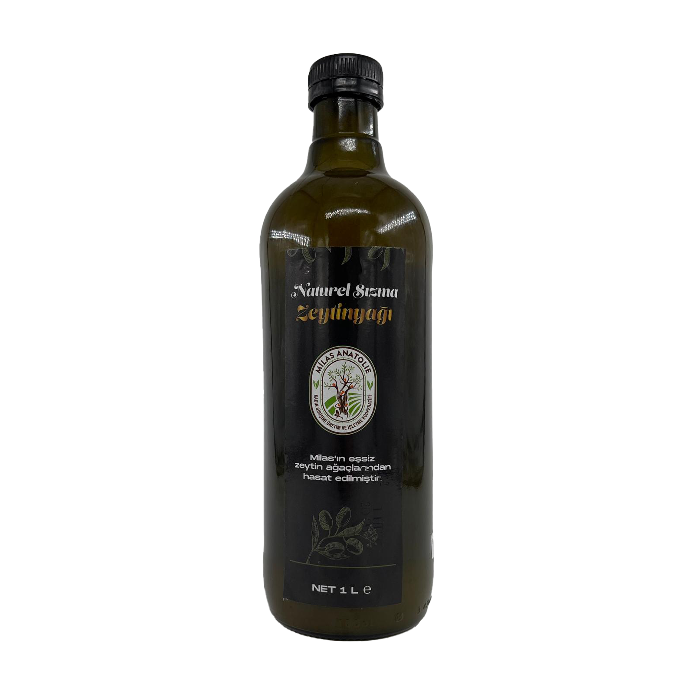
Bölgesel / YerelMilas Zeytinyağları
Muğla'nın Milas ilçesinden üretim yapan yerel marka. Milas bölgesinin kendine has zeytin çeşitlerinden kaliteli yağ üretir....
 Premium / Butik
Premium / Butik
MonOlive
Premium zeytinyağı markası. Tek çeşit zeytinlerden üretilen butik natürel sızma zeytinyağları sunar....
 Bölgesel / Yerel
Bölgesel / Yerel
MR Zeytin
Akhisar merkezli zeytin ve zeytinyağı üreticisi. Natürel sızma ürünleriyle öne çıkar....
Nar Gourmet
Premium gıda markası olup zeytinyağı portföyü de bulunur. Türk lezzetlerini dünyaya tanıtan ödüllü markadır....
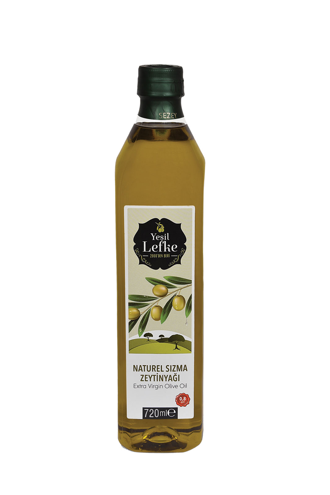
MarketNaturel
Doğal ve saf zeytinyağı ürünleri sunan marka. Natürelliği ön plana çıkarır....
Nish Olive
Premium butik zeytinyağı markası. Sınırlı üretimli, özenle seçilmiş tek çeşit zeytinlerden yüksek kaliteli natürel sızma zeytinyağı üretir....
Premium / ButikOlea Prilis
Premium butik zeytinyağı markası. Uluslararası kalite standartlarında, düşük asitli natürel sızma zeytinyağı üretir....
OleTurk
Milas ve Ege havzasından zeytinlerle üretim yapan marka. Natürel sızma odaklı ürün portföyü sunar....
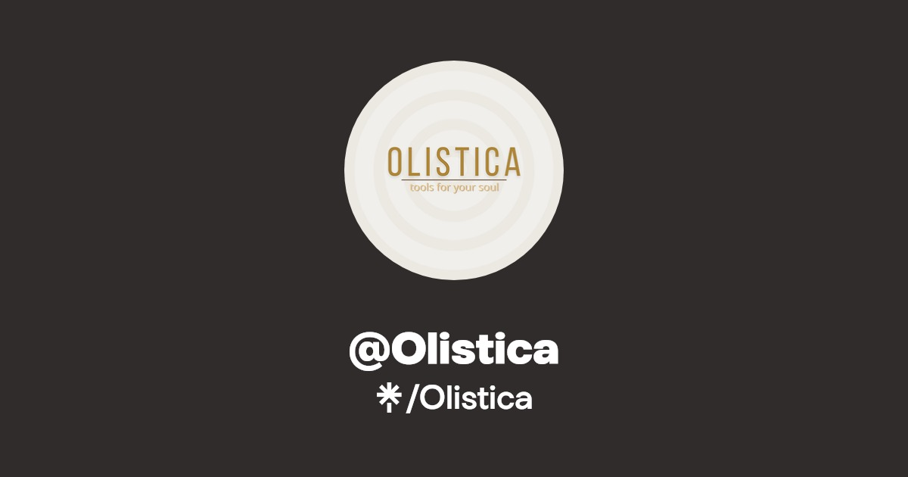
Premium / ButikOlistica
Butik üretim yapan premium zeytinyağı markası. Sınırlı sayıda üretilen, tek çeşit (monocultivar) zeytinyağları ile tanınır....
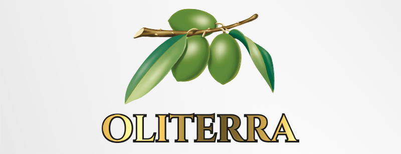
Premium / ButikOliterra
Yükselen Türk zeytinyağı markası. Natürel sızma zeytinyağında kalite odaklı üretim yapar....
Olivamore
Butik üretim anlayışına sahip zeytinyağı markası. Erken hasat natürel sızma ürünleri sunar....
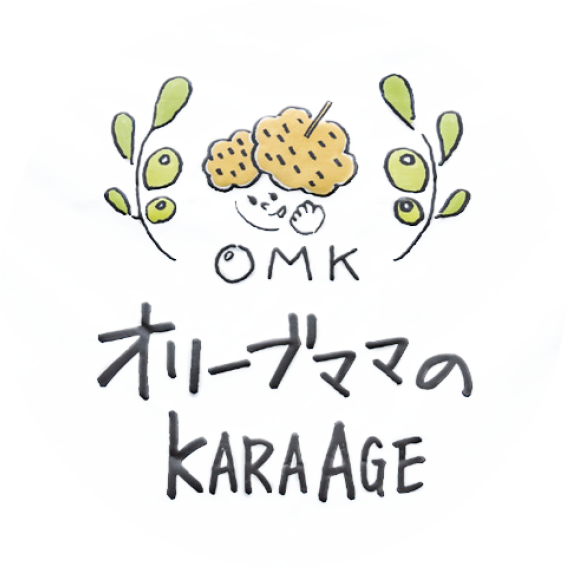
OrganikOlive Mama
Organik ve doğal zeytinyağı markası. Kadın girişimciler tarafından kurulan, sürdürülebilir tarım odaklı butik üretici....
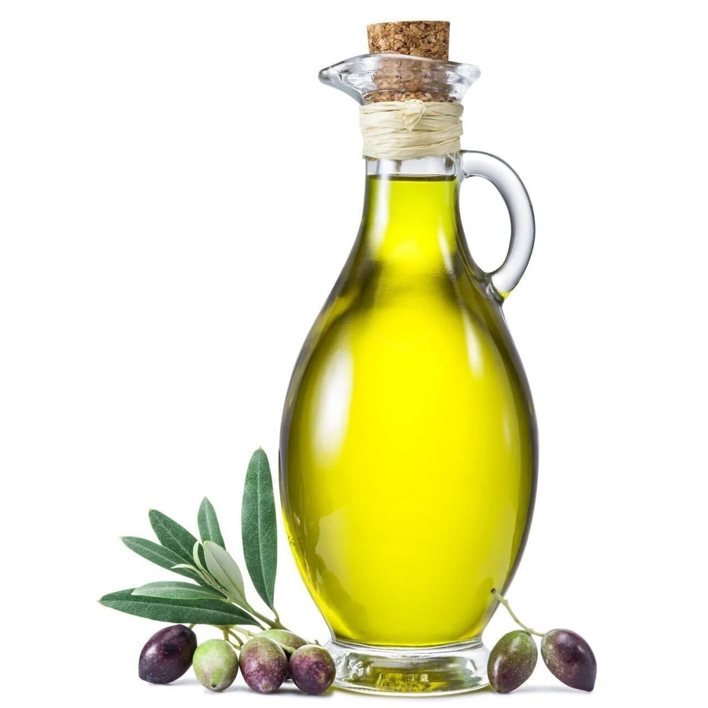
MarketOlive Riviera
Kaliteli Türk zeytinyağı markası. Riviera ve natürel sızma zeytinyağı çeşitleri ile piyasada yer alır....
OliveOilsLand
Zeytinyağı ürünlerinde premium ve butik segmentte yer alan marka....
 Premium / Butik
Premium / Butik
Olivos
Zeytinyağı bazlı ürünleriyle tanınan Türk markası. Zeytinyağı satışının yanı sıra zeytinyağlı sabun ve kozmetik ürünleri de üretir....
 Premium / Butik
Premium / Butik
Olivurla
Urla bölgesinden premium zeytinyağı üreten butik marka. Urla'nın eşsiz mikro ikliminde yetişen zeytinlerden üretim yapar....
Olivya Gökçeovacık
Milas bölgesinde faaliyet gösteren butik marka. Yöresel karakterli natürel sızma zeytinyağı üretir....
 Premium / Butik
Premium / Butik
OVE Foods
Zeytin ve zeytinyağı odaklı gıda markası. Natürel sızma ve gurme segment ürünler sunar....
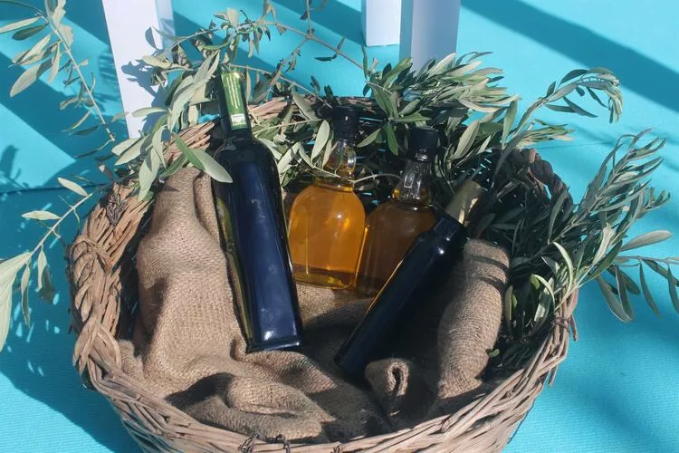
Bölgesel / YerelÖdemiş Birlik
Ödemiş bölgesi zeytin üreticileri kooperatifi. Memecik çeşidi zeytinlerden kaliteli natürel sızma zeytinyağı üretir....
 Premium / Butik
Premium / Butik
Özgün Olive
Butik üretim yapan zeytinyağı markası. Soğuk sıkım natürel sızma zeytinyağı ve aromatik zeytinyağı çeşitleri sunar....
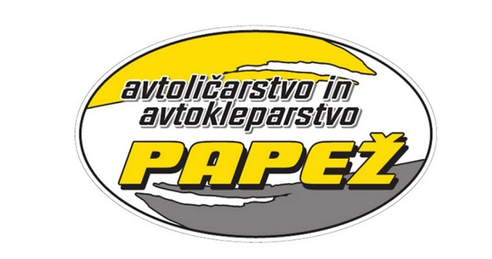
Bölgesel / YerelPapez
Güney Ege bölgesinden kaliteli zeytinyağı üreten marka. Natürel sızma zeytinyağları ile tanınır....
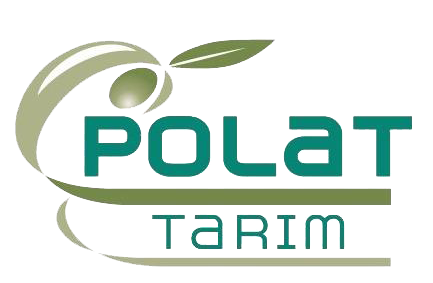
Bölgesel / YerelPolat Zeytinyağı
Ege bölgesinde uzun yıllardır zeytinyağı üreten aile şirketi. Geleneksel yöntemlerle kaliteli natürel sızma zeytinyağı üretir....
Sabuncugil
Ayvalık kökenli geleneksel üretici marka. Natürel sızma ve bölgesel ürünleriyle bilinir....
 Bölgesel / Yerel
Bölgesel / Yerel
Selatin
Geleneksel yöntemlerle üretim yapan zeytinyağı markası. Doğal ve katkısız ürünleri ile bilinir....
 Premium / Butik
Premium / Butik
Semylasa
Milas yöresinden üretim yapan premium marka. Natürel sızma zeytinyağı çeşitleriyle öne çıkar....
 Premium / Butik
Premium / Butik
Tego
Modern tasarımlı premium zeytinyağı markası. Genç nesil tüketicilere hitap eden şık ambalajlarıyla öne çıkar....
Verde
Kuzey Ege odaklı zeytinyağı markası. Erken hasat natürel sızma ve farklı ambalaj seçenekleriyle öne çıkar....
 Market
Market
Yudum
Türkiye'nin en büyük yemeklik yağ markalarından biri. Savola Group bünyesinde faaliyet gösterir. Zeytinyağı dahil geniş ürün gamı mevcuttur....
 Bölgesel / Yerel
Bölgesel / Yerel
Zetay
Edremit Körfezi odaklı üretici. Bölgesel zeytinlerden natürel sızma ve riviera ürünleri sunar....
Zeytin Dalı
Ege bölgesinden natürel sızma zeytinyağı üreten marka. Geleneksel ve modern üretim yöntemlerini birleştirerek kaliteli ürünler sunar....
Zeytinsan
Akhisar merkezli daha geniş ölçekli üretici. Farklı segmentlerde zeytinyağı ürünleri sunar....